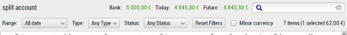

Multiple currencies
You can now manage accounts in different currencies. When opening a file from a previous version of HomeBank, you will be prompted to choose a base currency.
Then you can add several currencies with the currencies dialog, update the exchange rate on-line, and assign different currencies to every account.
Take care as the currency formatting option are now in the currencies dialog.
↑ Back to Top
Payee default category and payment type
Payee now enables to set some default value for category and payment. So when you add a new transaction, choosing a payee will automatically fill the category and payment. When you edit a transaction, choosing a payee will complete one or both those two fields if they are empty. See the payee dialog.
↑ Back to Top
New feature for automatic assignments
New capabilities of the automatic assignment are available:
- assign payment
- overwrite is now possible
- regular expression can be used
See the assignment dialog.
↑ Back to Top
Ability to change language
You can now select a different language than the one of your system !
↑ Back to Top
New filters for account window
The account window now have a new filter / information bar.

Here is a description from left to right:
- Account title
- Date range filter
- Type filter: expense, income
- Status filter: uncategorized, unreconciled
- Reset filter button
- Number of items displayed with total amount
- Number of transaction selected and the amount sum
↑ Back to Top
Scheduled append until a day of month
You can now insert transaction within a specific day in the next month.
So for example, you can add until the 28th of each month, the selected date excluded, which mean transaction that should occurs on 28 will not be inserted.
You can keep the previous behavior to add xx days into the future from today's date.
↑ Back to Top
 :
:  :
: